Oil Painting · Drawing · Contemporary Chinese Art
YANG
JIANBO
Between mountain and sky, between stillness and flight — a world rendered in pencil and oil.
View Works
Scroll
Oil Painting · Drawing · Contemporary Chinese Art
Between mountain and sky, between stillness and flight — a world rendered in pencil and oil.
View Works
Yang Jianbo's work occupies a rare space between documentary and dream — rooted in the landscapes of Yunnan and Tibet, yet charged with an interior logic that transcends geography.
Born in 1972 in Kunming, Yunnan Province, Yang Jianbo graduated from the Fine Arts College of Southwest University in 1991. He currently serves as Professor and Department Chair at the School of Art and Design, Yunnan University, where he also supervises graduate students in oil painting.
His work has been selected for the 3rd National Oil Painting Exhibition, and the 10th, 12th, 13th, and 14th National Fine Arts Exhibitions — among the most prestigious institutional acknowledgments in contemporary Chinese painting. In 2023, he received a National Arts Fund grant for fine arts creation.
His paintings are held in the collections of Jiangsu Art Museum, China News Service Yunnan Branch, and numerous private collections internationally.
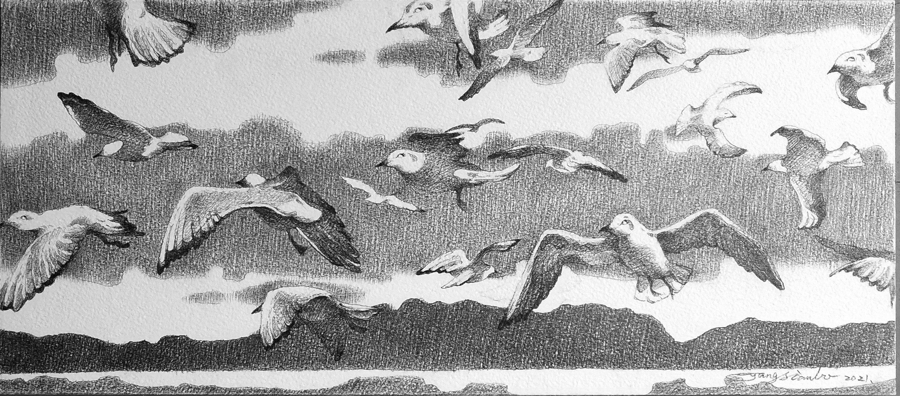
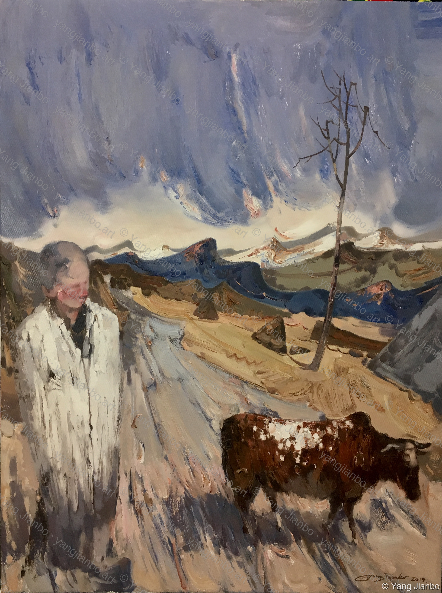
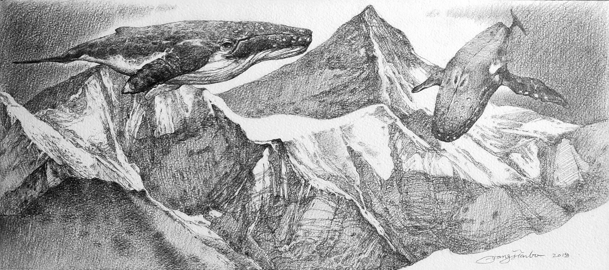

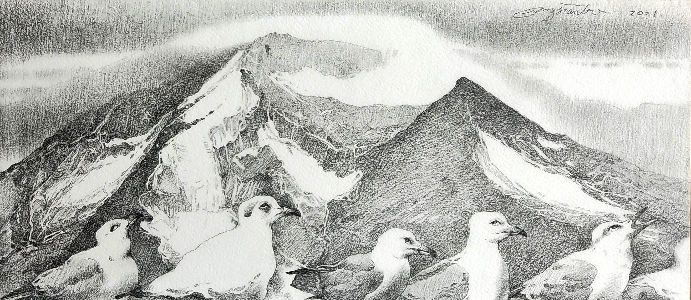
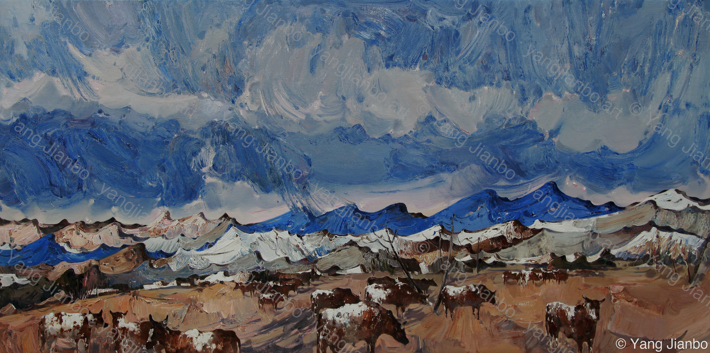
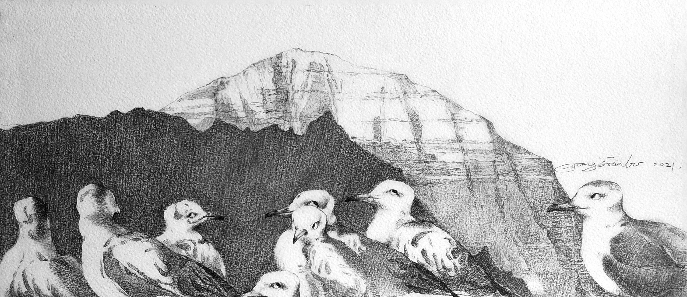

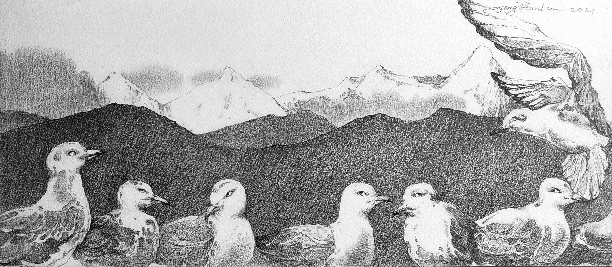
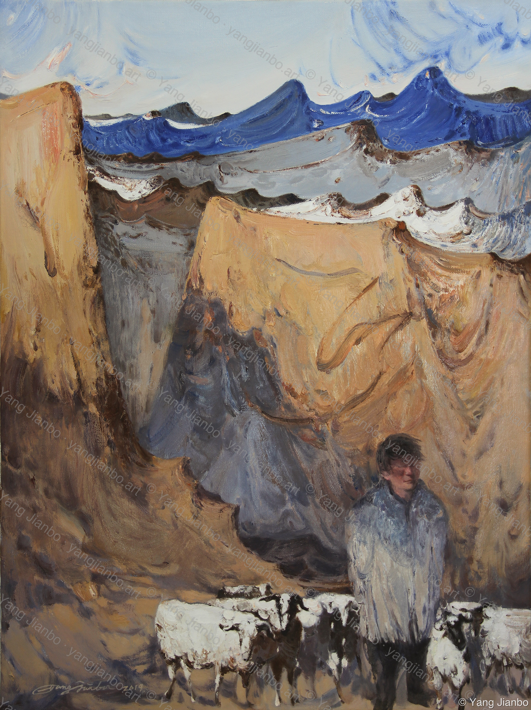
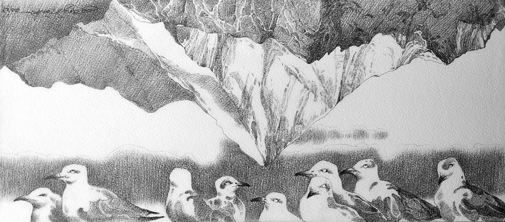
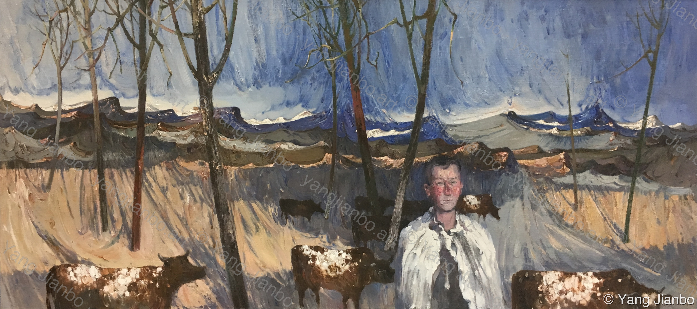
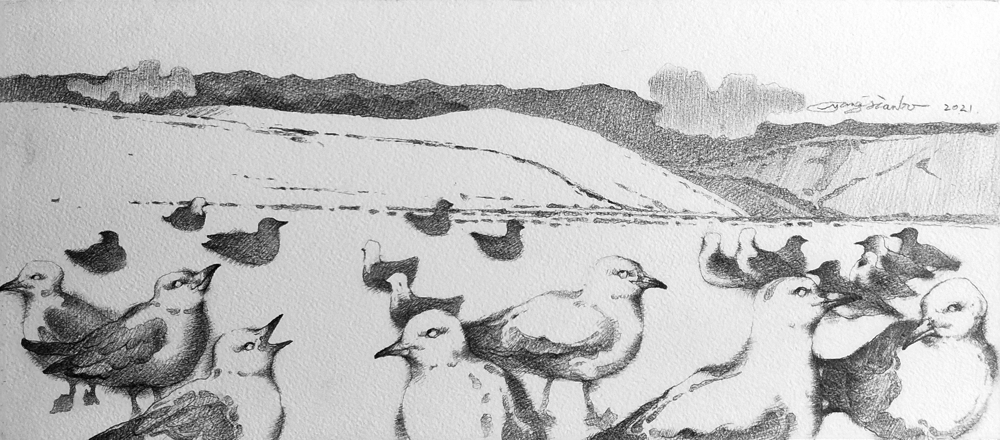
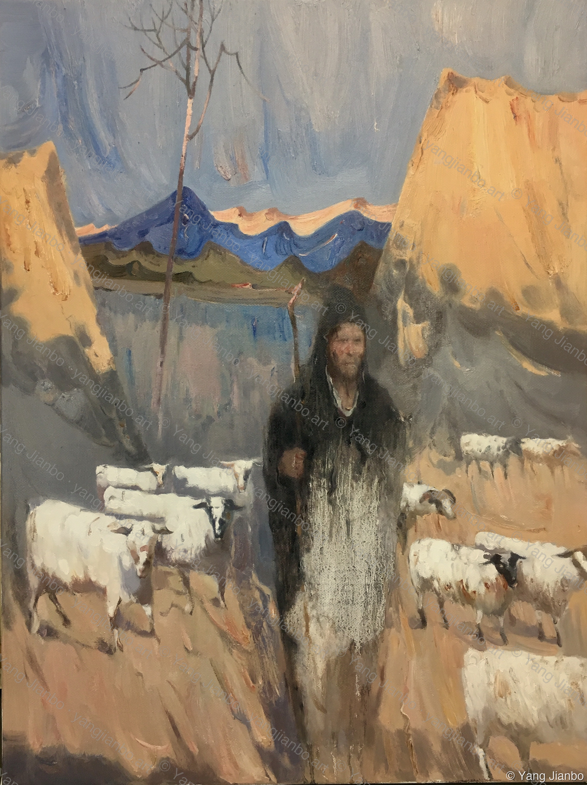
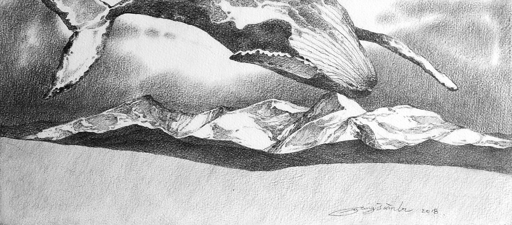
Oil paintings depicting Tibetan herders, pilgrims and nomads against the vast layered landscapes of the Qinghai-Tibet Plateau. The human figure becomes both witness and emblem of an ancient way of life in transition.
A sustained pencil drawing series observing the Black-headed Gulls of Kunming's Dianchi Lake against the backdrop of distant snow-capped ranges — migration, community, and the eternal indifference of mountains.
A surrealist pencil series in which humpback whales drift silently above Himalayan ridgelines — a meditation on scale, time, and the strangeness of the natural world when observed without assumption.
Pure landscape oil paintings where mountain ranges dissolve into one another in stacked horizontal bands of blue, ochre and white — the Yunnan plateau rendered as geological music.
Available for exhibition submissions, gallery representation, and private sales. Original works and limited edition prints available upon inquiry.